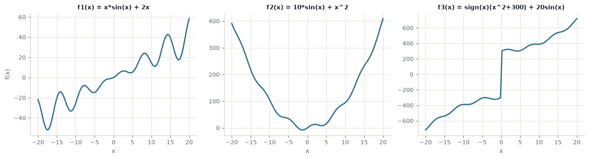
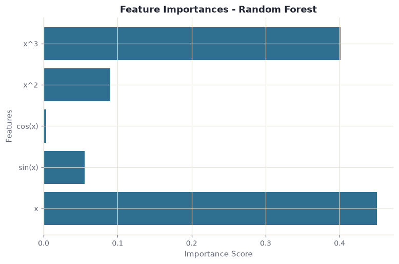
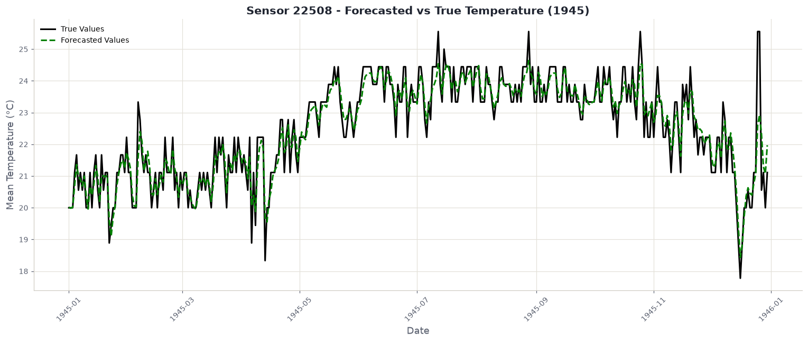

Regression, tested to destruction
One model fits this curve exactly. R squared of 1.000, nothing left over. It is also the first model to fall apart, and it falls further than anything else here: all the way to −24.4.
Every number on this page comes out of one notebook. Read it on GitHub · open it in Colab
Every point here comes from x·sin(x) + 2x. Because the
formula is known, there is a correct answer at every position, and a
model can be marked against it rather than against opinion.
Four models are fitted. Each gets the same five columns as input:
x, sin x, cos x,
x², x³. Nobody told them the formula, only
that the shape looks periodic and polynomial.
R squared is the share of the variation a model accounts for.
1.000 is exact. 0.000 means it does no better than always guessing the
average and ignoring x completely. Below zero means it
does worse than that.
Polynomial regression and ridge both hit 1.000. Given
sin x as a column, x·sin(x) + 2x is just a
weighted sum of the inputs, so the model does not need to approximate
anything. It solves for four numbers and lands on the curve.
Plain linear regression manages 0.888 without ever bending. It is fitting the upward drift and ignoring every wave, and on this function the drift alone is most of the story.
Each target gets a random nudge drawn from a normal distribution. At σ = 5 the curve is still obvious to the eye, and the polynomial has already dropped from 1.000 to 0.481.
Nothing about the underlying function changed. What changed is that the points no longer sit exactly on it, and a model with enough freedom to pass through every point will use that freedom.
By σ = 20 the polynomial is at −8.4. It is not merely inaccurate. It is worse than refusing to model the data at all and drawing a flat line through the average.
This is overfitting, and the chart shows the mechanism rather than the definition: the curve is chasing individual points. Those points contain noise, so the shape it learns is partly the shape of the randomness, which will be different next time.
At σ = 75 everything has degraded, because at this point the noise is larger than much of the signal. But look at the spread: linear sits near −0.78 and the polynomial is at −24.4, roughly thirty times worse.
Ridge is the same polynomial with one change: large coefficients are penalised. That single constraint is the difference between a model that bends toward every point and one that cannot afford to.
Regularisation adds the size of the coefficients to the thing being minimised. The model must now trade accuracy against complexity, so it only buys a bend when the data really pays for it.
The ranking at zero noise is the opposite of the ranking under noise. If you picked a model by its score on clean data, you picked the one that fails hardest the moment reality intrudes.
That is the whole argument, and it is why the rest of this project keeps taking guarantees away: correlated inputs next, then useless inputs, then real weather where there is no formula to recover at all.
Skip this if it is familiar. If it is not, everything below depends on it.
You have pairs of numbers. An input, call it \(x\), and an output, \(y\). A regression model is a rule for guessing \(y\) when you are handed a new \(x\) you have not seen before. Fitting the model means searching for the rule that comes closest to the pairs you already have.
The simplest rule is a straight line: pick a slope and a height, and the model is fixed. Linear regression does exactly that, choosing the line whose total squared distance from the points is smallest. It is the whole method.
Other models allow other shapes:
Two numbers are used to mark them. MSE is the average squared error: lower is better, and squaring means one large miss hurts more than several small ones. R squared rescales that into a share: 1.000 means the model accounts for all the variation, 0.000 means it does no better than ignoring \(x\) entirely and always answering with the average, and a negative value means it does worse than that. Negative is not a rounding problem. It is a model you would be better off deleting.
The study names three functions. They look similar on paper and behave nothing alike.
\[f_1(x) = x \sin(x) + 2x \qquad f_2(x) = 10 \sin(x) + x^2 \qquad f_3(x) = \operatorname{sign}(x)(x^2 + 300) + 20 \sin(x)\]

Fitted on raw \(x\) alone, with no engineered columns, they separate the models sharply:
| Function | Linear | Poly (3) | Forest | SVR |
|---|---|---|---|---|
| \(f_1\), a rising wave | 0.892 | 0.891 | 0.987 | 0.885 |
| \(f_2\), a rippled parabola | −0.019 | 0.996 | 0.996 | 0.995 |
| \(f_3\), a parabola with a jump | 0.932 | 0.945 | 1.000 | 0.973 |
Look at linear regression. On \(f_1\) it manages a respectable 0.892. On \(f_2\) it scores below zero, which is the worst result any model records on clean data anywhere in this project.
The reason is worth sitting with, because the usual explanation is wrong. It is not that \(f_2\) is “too non-linear”. \(f_1\) is non-linear too and the line did fine there. The difference is symmetry. \(f_1\) contains \(2x\), a steady climb that a line can follow. \(f_2\) is a parabola centred on zero: it falls, then rises by the same amount. The best straight line through it is flat, and a flat line is precisely the “always guess the average” baseline that R squared scores as zero.
The transferable lesson. Linear regression does not fail when a relationship is curved. It fails when the relationship has no consistent direction. Check whether \(y\) trends with \(x\) overall before assuming a line is a reasonable starting point.
And \(f_3\) shows the reverse. It contains a jump at the origin, a vertical cliff that no smooth curve can reproduce, yet random forest scores a perfect 1.000 on it. A staircase model finds a step trivial, because stepping is all it does. The shape that is hardest for every equation-shaped model is the easiest one here.
A real dataset cannot tell you whether a model is right. It can only tell you whether the model agrees with the labels you happen to have, and if those labels are wrong or incomplete, agreement is worthless.
Synthetic data removes that problem by construction. Each function above is sampled at 100 points across \([-20, 20]\) and split 70/30 at a fixed seed. The point is not that these curves are interesting. The point is that when a model gets one wrong, you can prove it.
The rest of this page follows \(f_1\), because it is the shape the noise and feature-engineering experiments were run against.
The models never see the formula. They see engineered columns: \(x\), \(\sin x\), \(\cos x\), \(x^2\), \(x^3\). That choice came from looking at a plot and noticing the curve was both wavy and rising.
It changes everything, and the table shows how unevenly:
| Model | before | after | change |
|---|---|---|---|
| Polynomial (deg 3) | 0.891 | 1.000 | +0.109 |
| SVR (RBF) | 0.885 | 1.000 | +0.115 |
| Random Forest | 0.987 | 0.986 | −0.001 |
| Linear Regression | 0.892 | 0.888 | −0.004 |
The five columns are built by one function, and it never sees \(f_1\):
def create_features(x):
return np.column_stack([
x,
np.sin(x),
np.cos(x),
x**2,
x**3
])That restraint is the point. np.sin(x) is a guess drawn from looking at a plot, not a copy of the answer. A function that returned x * np.sin(x) + 2 * x would score 1.000 too and would have proved nothing.
Feature engineering did not make anything smarter. It rewrote the question. “Approximate this curve” became “find four coefficients”, and the second question has an exact answer. Random forest gained nothing because it was never asking the first question: it slices the input into regions and averages inside them, so a wavy curve costs it no more than a straight one.

x and x³ and nearly ignores cos x, which carries nothing this function needs.
Why the inputs are scaled first. The engineered columns are wildly different sizes: at \(x = 20\) the \(x^3\) column is 8,000 while \(\sin x\) never leaves \([-1, 1]\). Ridge penalises large coefficients, and SVR measures distance between points, so both would be dominated by whichever column happens to carry the biggest numbers. StandardScaler puts every column on the same footing first. Random forest needs none of this, because a threshold split does not care what units it is splitting.
The brief asks for something sharper than a score here: build a dataset where some inputs are known to be pure noise, fit a linear regressor, and read the coefficients it learned for them.
The useless columns are drawn from a normal distribution and glued on beside the real ones, so nothing distinguishes them except that they carry no signal:
def create_harder_features(x, n_non_informative=5):
base_features = np.column_stack([
x, x * np.sin(x), np.sin(x), np.cos(x), x**2, x**3
])
non_informative = np.random.randn(len(x), n_non_informative)
return np.hstack([base_features, non_informative])
X_enhanced = create_harder_features(X_base, n_non_informative=10)With strong target noise and ten uninformative columns added, linear regression manages R² 0.082 with an MSE of 1845.6. Barely above useless. The coefficients explain why:
| Feature | Coefficient |
|---|---|
| 1 | 55.979 |
| 2 | 9.210 |
| 3 | 8.187 |
| 4 | 1.565 |
| 5 | 1.643 |
| 6 | −32.460 |
| 7 | 1.599 |
The expectation is that informative features get large weights and noise features get roughly zero. That is not what happened. Feature 6 carries no signal and was handed a coefficient of −32.5, comparable in size to the genuine one at the top.
This is worth internalising, because it is how feature importance is commonly misread. A large coefficient does not mean a feature matters. Least squares distributes weight to minimise error on the training set, and if a random column happens to correlate with the noise in that particular sample, it will be paid for it. Run it again with a different seed and the same column gets a different number.
Once the multivariate data is deliberately correlated, an obvious response is to reduce the inputs. The notebook tries the two standard approaches and scores them against the untouched baseline.
SelectKBest with f_regression picks columns: it scores each feature against the target and keeps the best. PCA builds new ones: it rotates the data onto axes of maximum variance, which are combinations of the originals and are uncorrelated by construction.
| Model | base R² | after selection | after PCA |
|---|---|---|---|
| Linear Regression | −0.013 | −0.013 | −0.013 |
| Polynomial (deg 2) | −0.049 | −0.013 | −0.008 |
| Random Forest | −0.046 | −0.085 | −0.054 |
| SVR (RBF) | −1.339 | −0.696 | −0.887 |
Both reduce ten columns to five, and both are handed to the same evaluate_models helper so nothing else differs between the runs:
selector = SelectKBest(score_func=f_regression, k=5)
X_train_selected = selector.fit_transform(X_train_corr, y_train_corr)
X_test_selected = selector.transform(X_test_corr)
pca = PCA(n_components=5)
X_train_pca = pca.fit_transform(X_train_scaled)
X_test_pca = pca.transform(X_test_scaled)Note that PCA is given scaled inputs and SelectKBest is not. PCA looks for directions of maximum variance, so a column measured in thousands would dominate the first component for no reason other than its units.
Neither rescues anything. The best result is polynomial regression moving from −0.049 to −0.008, which is still a model worse than the mean.
That is the useful lesson. Both techniques address redundancy among features, and redundancy was not the binding problem. The target simply did not have much explainable variance left once the correlation was introduced, and no amount of rearranging the inputs creates signal that is not there. Dimensionality reduction is a remedy for a specific illness, not a tonic.
How the correlated data was made. make_low_rank_matrix generates a matrix whose columns are combinations of a smaller number of underlying directions. Ten columns that genuinely contain, say, three independent dimensions. That is what makes the multicollinearity real rather than simulated by hand.
After watching the polynomial disintegrate, the notebook assembles a second pipeline designed with noise assumed rather than treated as an accident: smoothing on the targets, scaling, and models that regularise by default.
| Model | R² clean | R² noisy | change |
|---|---|---|---|
| Bayesian Ridge | 0.839 | 0.467 | −0.372 |
| Ridge CV | 0.838 | 0.496 | −0.342 |
Compare that against the first attempt, where polynomial regression fell from 1.000 to −0.917. These models start lower and end far higher. Giving up the perfect fit bought resilience worth more than the fit was.
Savitzky-Golay smoothing. Rather than averaging neighbouring points, which flattens peaks, it fits a low-order polynomial across a sliding window and takes its value at the centre. Noise falls away while the shape of genuine features survives, which matters when the peaks are the signal.
Bayesian Ridge and RidgeCV. Both remove a manual choice. RidgeCV tries a range of penalty strengths and cross-validates to pick one. Bayesian Ridge treats the penalty as a parameter to be estimated from the data alongside the coefficients, so nobody has to guess it.
The last stage removes the last guarantee. The data is daily weather from sensor 22508 near Honolulu, recorded between 1940 and 1945. No formula produced it. There is no truth to recover, only yesterday and tomorrow.
A rolling window converts the series into a supervised problem: the previous \(W\) days become the inputs and the next day becomes the target, with the window sliding one day at a time.
def create_rolling_windows(data, window_size=7):
X, y = [], []
for i in range(len(data) - window_size):
X.append(data[i:i+window_size])
y.append(data[i+window_size])
return np.array(X), np.array(y)
X_rolling, y_rolling = create_rolling_windows(df_sensor['MeanTemp'].values, 7)Seven columns in, one out. A time series has become an ordinary supervised table, and every regression model above now applies to it unchanged.
Training uses 1940 to 1944, testing uses 1945, so the model always predicts forward and never peeks at a period it has seen.
| Model | R² | MSE |
|---|---|---|
| Linear Regression | 0.687 | 0.736 |
| Polynomial (deg 2) | 0.680 | 0.754 |
| Random Forest | 0.649 | 0.825 |
| SVR (RBF) | 0.398 | 1.416 |
Linear regression wins here, having lost on the synthetic curve. Tomorrow’s temperature mostly resembles today’s, and that relationship is close to a straight line. The flexible models have no hidden structure to find, so their flexibility only gives them more ways to be wrong. SVR at 0.398 is the clearest case.

Across five TimeSeriesSplit folds, Bayesian Ridge averages about 0.73, with folds ranging from 0.628 to 0.795. The spread is the more useful number: it says the answer depends on which stretch of the war you test on.
Why one day and not seven. Each prediction uses real measurements from the days before it. To forecast a week ahead you must feed predictions back in as though they were measurements, so every error compounds into the next step. The notebook sidesteps this with MultiOutputRegressor, predicting all seven days at once, which avoids the feedback but cannot see past the window it was handed.
| Model | baseline | tuned | change |
|---|---|---|---|
| Linear Regression | 0.752 ± 0.057 | 0.743 ± 0.057 | −0.008 |
GridSearchCV made it fractionally worse. Against a fold standard deviation of 0.057, a change of 0.008 is noise. The honest reading is that the pipeline was already where it wanted to be and the search had nothing to find, which is a result rather than a failure to report.
Flexibility is only an asset when the truth is complicated. Random forest won on a wavy curve and lost on temperatures. SVR was competitive on synthetic data and worst on real data.
A perfect score is a warning. The only model to reach 1.000 was the only one to reach −24.
One metric can invert the story. The correlated round had error falling and R² collapsing at the same time, from identical predictions.
Regularisation never wins and never loses badly. Ridge held no best score in any clean comparison and avoided every disaster in the spoiled ones.
Every table above is printed by one notebook, executed top to bottom, and the excerpts on this page are lifted from it unedited. Nothing was fitted somewhere else and pasted in.
git clone https://github.com/O-2wice/regression-benchmark-and-forecasting
cd regression-benchmark-and-forecasting
pip install -r requirements.txt
jupyter lab notebooks/regression-benchmark-and-forecasting.ipynbIt runs on a laptop CPU in a few minutes. There is nothing to download by hand and no key to supply: the weather archive is fetched over urllib and unpacked with zipfile, so it behaves the same on Windows, macOS, Linux and Colab.
The most useful thing you can do with it is change the seed. Several results here, especially the coefficient handed to a pure-noise column, are stable in their lesson and unstable in their exact value. Watching that number move is the lesson.